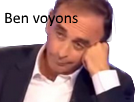

Pray the amogus lord.
Ce que vous venez de voir constitue deux "memes", l'un étant le Dorime, l'autre l'Amogus.
Qu'est-ce qu'un même ?
Ben voyons. 
Un mème Internet est un élément ou un phénomène repris et décliné en masse sur Internet.
Il s'agit d'une francisation de l'anglais « Internet meme ».
Il se prononce "mime" en anglais et "mèm" en français.
Par exemple, les expressions du célèbre journaliste/polémiste, désormais candidat, Eric Zemmour, ont étés largement détournées et reprises à des fins humoristiques.
Mais cela ne concerne pas que les hommes politiques tel que lui, Jean-Luc Mélenchon et bien d'autres.
Un meme peut aussi être issu d'un jeu, avec le célèbre "Ah shit, here we go again" de GTA San Andreas.  Certains sites proposent un "recueil" de tout ces memes, le plus connu d'entre eux étant Know Your Meme (Apprends ton meme/Connais ton meme), j'ai décidé de vous le présenter.
Certains sites proposent un "recueil" de tout ces memes, le plus connu d'entre eux étant Know Your Meme (Apprends ton meme/Connais ton meme), j'ai décidé de vous le présenter.
Le projet Know Your Meme débute en septembre 2007 en une série de vidéos Rocketboom, et également comme site de style wiki hébergeant des documentations sur les origines des mèmes. Ce site héberge des memes de toutes les origines, du jeu vidéo en passant par la politique et les chats, jusqu'aux memes d'extrême droite comme pepe the frog, très utilisé sur des forums jugés comme d'extrême droite tel que 4chan.
Quelques exemples de memes : Lors d'un débat en 2002 ayant eu lieu sur le plateau de France 3, Jean-Luc Mélenchon, attaqué par Marine Le Pen, décide de lui répondre en disant d'elle "Mais qui elle est celle là?", cet extrait fût par la suite réutilisé dans des YTP (Youtube Poop) qui sont des parodies de vidéos, films et autres. Une vidéo du président Vladimir Poutine, marchant au Kremlin, élargit par un filtre avec Song For Denise en fond. Extrait d'un live de Pokimane, streameuse anglophone, qui fût largement réutilisé par la communauté francophone pour tourner sa phrase au ridicule en montrant des extraits d'un streamer francophone nommé sardoche. Extrait de l'un des meetings de JLM, ou il se dédouble afin de tenir un meeting dans plusieurs villes par hologramme. Et enfin pour conclure, extrait du meeting du Congrès LR, où Valérie Pécresse a fait de multiples répliques. Merci Valérie pour le PC d'ailleurs.
Valérie Pécresse, les sondages et la queue du chien pic.twitter.com/9M94LbVGgj
— Moments 2021 (@RienNothing00) November 23, 2021